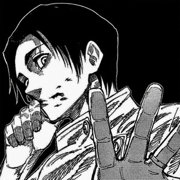
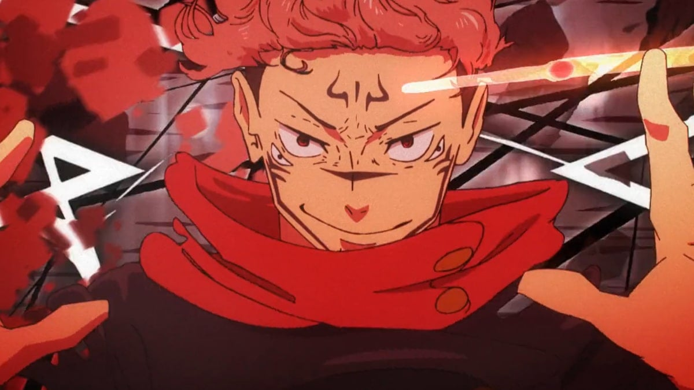

Anime del día
Descubre el anime destacado de hoy y sumérgete en emocionantes historias.

Descubre el anime destacado de hoy y sumérgete en emocionantes historias.
Explora los animes más populares del momento y encuentra tu próxima obsesión.
Conoce a los personajes más queridos y carismáticos del mundo del anime.
Explora el arte fanático inspirado en tus series favoritas. ¡Déjate sorprender por la creatividad de la comunidad!
